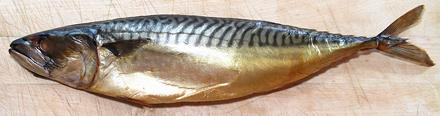
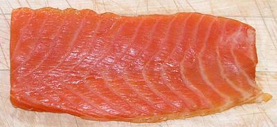
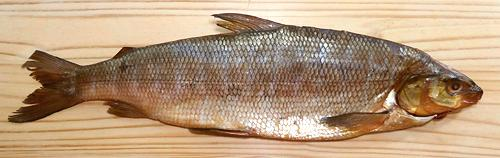
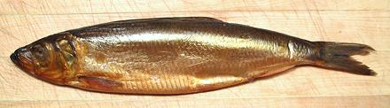
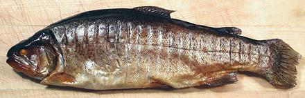
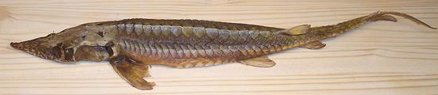

Smoking has been used as a way to preserve fish for thousands of years. While no longer necessary for preservation, smoked fish is still very popular for snacks and as a recipe ingredient due to its unique flavor. Generally, Oily fish are smoked, as they work much better than non-oily fish.
Today's smoking methods are different from the distant past, because today the fish is salt cured before being smoked. Before the 17th century salt was too expensive for such uses, but this changed when the great salt pans of Aveiro, Portugal brought the price down. You will find modern smoked fish to be quite salty. The salt cure provides a safer fish with better texture and reduces the smoking time from days to hours. Photo of smoked eels by Tasja distributed under license Creative Commons Attribution-ShareAlike v3.0 Unported.
More on Fish - Dried, Salted & Smoked
Cold Smoked fish is a raw fish product. It is considered fine to eat cold smoked salmon, but other fish are considered rather iffy and are intended to be cooked. The process starts by scaling and cleaning the fish. The gills are pulled but the head and tail are most often left on. It is then Salt Cured with dry salt or brine. Some brown sugar is usually included in the cure for flavor and moisture control. It is then refrigerated in free air for 12 hours to develop a sticky coating (pellicle) for the smoke to stick to. After the salt cure, it is placed in a chamber that smoke is pumped through for 12 to 48 hours at a maximum of 77°F/25°C. Because cold smoked fish is in the bacteria growth temperature range for some time, great care is needed to assure it is safe. Just the same, cooking before eating is advised. The cooking makes the flesh much firmer and improves the flavor.
Mackerel - Cold Smoked The photo specimen was 14-1/2 inches long weighing 12-3/8 ounces. It was purchased from a large multi-ethnic market in Los Angeles (Sunland) for 2018 US $7.69 / pound. It was quite salty from the pre-smoking salt cure. Prep:Fillet this fish just as you would a fresh fish. Unlike a fresh mackerel, the skin is very tough and has rather extreme shrink in cooking, so it needs to be removed. Just peel it off, starting at the head end. Yield for skinless fillets is about 71%Cooking:Grill or broil the fillets until they reaches an internal temperature of over 130°F/55°C. Pan frying and wrapping in foil and baking can also be used. Various seasonings may be applied before cooking. Coarsely cracked black or mixed pepper corns are very popular. The mix can include black, white, green and pink peppercorns.Salmon - Cold Smoked Salmon is the only cold smoked fish approved for eating raw. Why Salmon gets this exemption I do not know. The photo specimen slab of Salmon Belly was purchased from a large multi-ethnic market in Los Angeles (Sunland) for 2018 US $8.69 / pound. It was quite salty from the pre-smoking salt cure. Some people consider cold smoked salmon "slimy" and prefer the much drier hot smoked salmon. Smoked Salmon is often used in recipes, such as salads, dips and toppings. Whitefish - Cold Smoked The photo specimen was 19 inches long weighing 2-1/2 pounds, and was the smallest one I could find in the market's bin. It was purchased from a large multi-ethnic market in Los Angeles (Sunland) for 2018 US $8.49 / pound. This fish is very salty from the pre-smoke cure, and tends to break up into large flakes as soon as it is cooked, so it is best used in recipes. Scrambled eggs, salads, chowders and dips and cracker toppings are examples. Prep:This is not the easiest fish to deal with. It is covered with large scales that are very difficult to scrape off. I suggest you scrape off just enough to make the usual filleting cuts. Cut just through the skin and peel it off, starting at the head end, then deepen the cuts to fillet the fish as usual. Once you get over the backbone at the tail and work forward to the body cavity, just use kitchen shears to cut the ribs from the backbone. Pull them from the fillet with long nose pliers. There are also many long sharp centerline pin bones to pull for nearly the length of the body cavity. Unlike most fish, they trend upward rather than straight back, so pull them downward. Yield is about 66% skin off.Cooking:Fillets tend to stick to the grill, so the best method for this fish may be to wrap in oiled aluminum foil and roast in the oven. When grilling, I cut the fillets into three pieces: 1/3 of the length at the tail end, then cut the skirt from the top at the centerline. This makes pieces that are of reasonably uniform thickness. Cook until it reaches an internal temperature of over 130°F/55°C.Herring - Cold Smoked The photo specimen was 14-1/2 inches long weighing 11-1/8 ounces. It was purchased from a large multi-ethnic market in Los Angeles (Sunland) for 2018 US $5.69 / pound. It was quite salty from the pre-smoking salt cure. The flesh of this fish is heavily infested with long thread bones. You can pull only a few before cooking, but after cooking they are easy to find and remove as you flake the fish apart. Flaking is called for in most recipes. Prep:This fish will have been already scaled, so it is easy to fillet, just as you would a fresh fish. Cut the ribs away from the backbone with shears and pull with long nose pliers, they pull very easily several at a time. The skin is thin but quite tough, and has rather extreme shrink in cooking, so it needs to be removed. Just peel it off, starting at the head end, taking care you don't take any flesh. Yield for skinless fillets is about 59%.Cooking:Grill or broil it until it reaches an internal temperature of over 130°F/55°C. Pan frying and wrapping in foil and baking can also be used. Once cooked it will flake apart very easily. |
In Hot Smoking, the smoke chamber is held at a high temperature and the smoking time is much less than for cold smoking. Care must be taken that the fish is cooked fully through, which will determine the smoking time. The process starts by scaling and cleaning the fish. The gills are pulled but the head and tail are most often left on. It is then Salt Cured with dry salt or brine. Some brown sugar is usually included in the cure for flavor and moisture control, and sometimes other flavorings. It is then refrigerated in free air for 12 hours to develop a sticky coating (pellicle) for the smoke to stick to. After the salt cure, it is placed in a chamber that smoke is pumped through at a temperature of 158° to 176° F (70° to 80° C). The final product is ready to eat as a snack, or use in recipes such as salads. It is usually eaten cold.
Trout - Hot Smoked Hot Smoked fish is completely cooked in the smoking process, and is usually eaten cold and "as is", as a snack or ingredient in salads and the like. It is noticeably salty, due to a preliminary salt cure before smoking. Trout is a very common fish for hot smoking. The skin is tough and inedible, but has no adhesion to the flesh. Once it is removed, the flesh practically falls apart into medium size flakes. The photo specimen was purchased from a large multi-ethnic market in Los Angeles (Sunland) for 2018 US $9.99 / pound, and was 13-3/4 inches long and weighed 1 pound 1-1/4 ounces. Sturgeon - Hot Smoked Smoked Sturgeon is very popular in Russia, and can sometimes be found in delis serving a Russian community. The photo specimen was purchaed from such a deli in Los Angeles (Glendale) that, unfortunately, no longer exists. It was 27 inches long and weighed 1.6 pounds. |